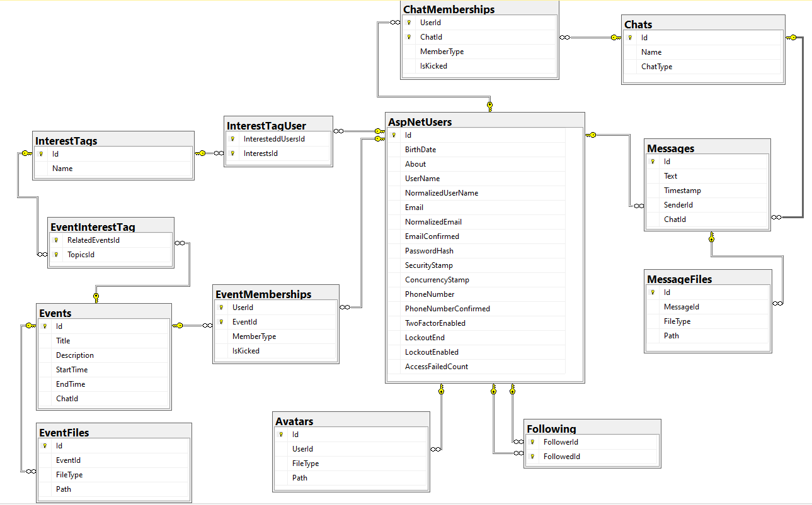

Датологічна модель. Опис моделі. Зв'язки між таблицями
Командне завдання
Даталогічна модель

Перелік сутностей та їх атрибутів
AspNetUsers - власне наш користувач сайту, що буде додавати інших користувачів у друзі, шукати події на вечір, бути організатором подій, тобто створювати їх, переглядати усю доступну інформацію, що міститься на сайті - повна інформація про іншого користувача або подію.
Атрибути : Id, BirthDate, About, UserName, NormaliedUserName, Email, NormalizedEmail, EmailConfirmed, PasswordHash, SecurityStamp, ConcurrencyStamp, PhoneNumber, PhoneNumberConfirmed, TwoFactorEnabled, LockoutEnd, LockoutEnabled, AccessFiledCount.ChatMemberships - асоціативна таблиця для пов'язування користувача із чатом. Для нашого авторизованого користувача, ця сутність виступає як друг (інший користувач), з яким відбувається листування у чаті на сайті.
Атрибути : UserId, ChatId, MemberType, IsKicked.Chats - власне сутність, що представляє собою чат між двома користувачами. Буде складатися із повідомлень вже зазначених двох користувачів.
Атрибути : Id, Name, ChatType.Messages - для користувача і чату виступає асоціативною таблицею. Сутність, що представляє собою повідомлення, котрі користувачі надсилають один одному і в такий спосіб спілкуються між собою.
Атрибути : Id, Text, TimeStamp, SenderId, ChatId.MessageFiles - сутність, що представляє собою файлові повідомлення, котрі користувачі надсилають один одному і в такий спосіб спілкуються між собою.
Атрибути : Id, MessageId, FileType, Path.Following - таблиця, що виступає асоціативно. Фактично представляє собою структуру, що містить інформацію про те, кого користувач відстежує і хто відстежує користувача.
Атрибути : FollowerId, FollowedId.Avatars - сутність, що представляє собою власне всі аватарки (головні зображення користувача, для наповнення профіля). Варто зазначити, що у профілі користувача, його аватаром буде остання завантажена фотографія/картинка. Подібна технологія реалізована у меседжері Телеграм.
Атрибути : Id, UserId, File type, Path.InterestTags - сутність, що представляє собою теги івента. Кожна подія відзначається переліком тегів, за якими зрічно розуміти що за подія/вечірка буде проходити. Подібна техніка реалізована у більшості меседжерів та є досить популярною для ідентифікації поста, а в нашому випадку події.
Атрибути : Id, Name.InterestTagUser - асоціативна таблиця, що виступає зв'язком між користувачем та тим, які теги він вподобав та які інтереси для нього є пріоритетними.
Атрибути : InterestedUserId, IneterestsId.Events - сутність, що власне відображає наші події. Представляє собою подію, з назвою, прикріпленими файлами, з описом, набором тегів для ідентифікації події, переліком користувачів, що бажють приєднатися.
Атрибути : Id, Title, Description, StartTime, EndTime, ChatId.EventInterestTag - асоціативна таблиця, що виступає зв'язком між подією та темами яких вона стосується. Ці теми, або ж ключові фрази, представлені тегами.
Атрибути : RelatedEventsId, TopicsId.EventMemberships - асоціативна таблиця, що виступає зв'язком між подією та користувачами, які бажають її відвідати. Відповідно, ми бачимо для кожної події - список тих хто хоче відвідати її, і відповідно до цього можемо змінювати свій вибір.
Атрибути : UserId, EventId, MemberType, IsKicked.EventFiles - сутність, що представляє собою файлові вкладення до події. Власне як правило це різного роду зображення. Якщо планується вечірка у приватному будинку, чи клубі, вкладеними файлами можуть виступати зображення приміщення, місцевості, скріншоти гугл-карт як добратися до місця проведення заходу та його розташування.
Атрибути : Id, EventId, FileType, Path.
Зв'язки :
Following - AspNetUsers : Багато - ОдногоAvatars - AspNetUsers : Багато - ОдногоChatMemberships - AspNetUsers : Багато - ОдногоChatMemberships - Chats : Багато - ОдногоMessages - Сhats : Багато - ОдногоMessages - User : Багато - ОдногоMessageFiles - Messages : Багато - ОдногоEventMemberships - AspNetUsers : Багато - ОдногоEventMemberships - Events : Багато - ОдногоInterestTagUser - AspNetUsers : Багато - ОдногоInterestTagUser - InterestTags : Багато - ОдногоEventInterestTag - InterestTags : Багато - ОдногоEventInterestTag - Events : Багато - ОдногоEventFiles - Event : Багато - Одного
|